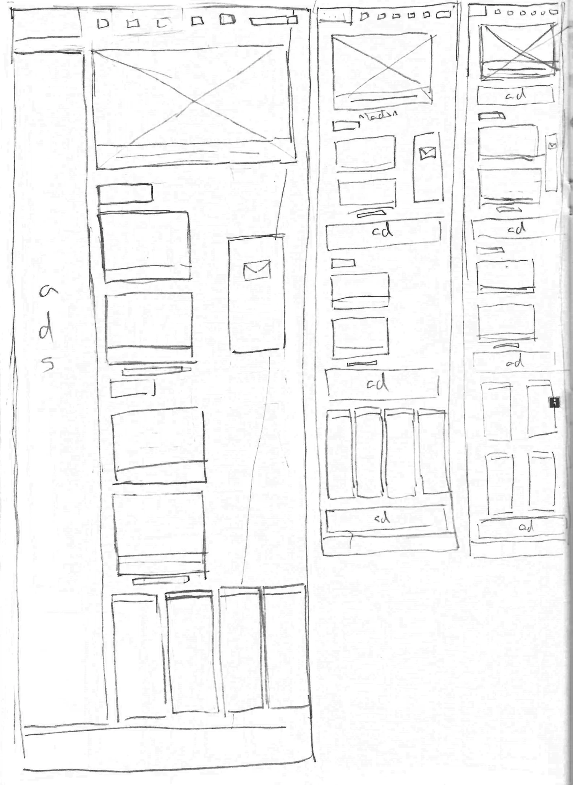
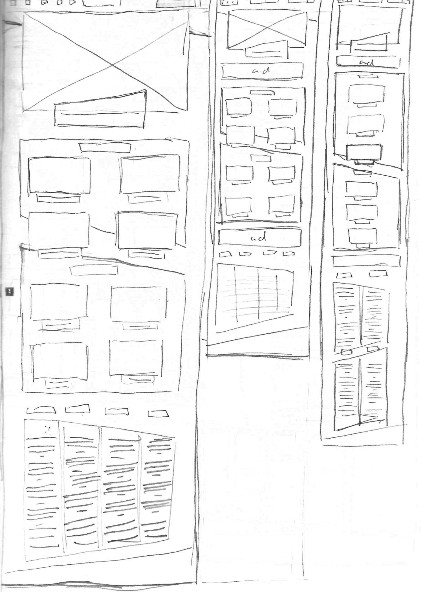
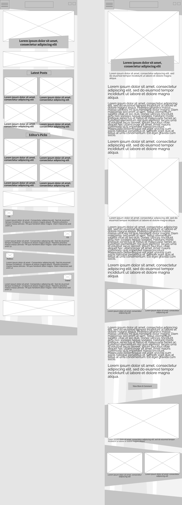
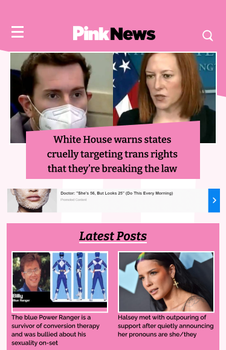
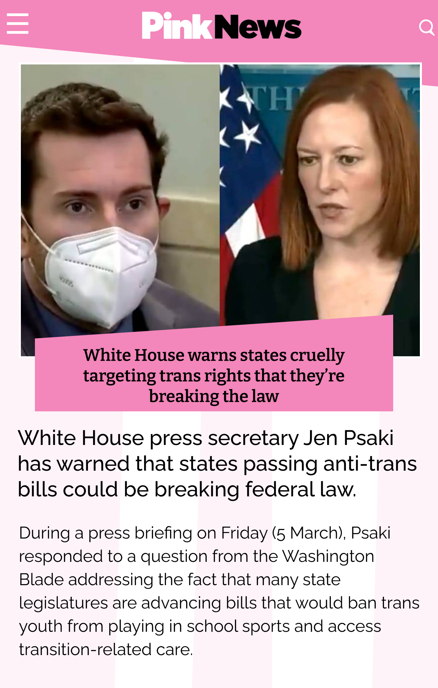

UX - UI - Design
Pink News is a LGBT+ news site based in the United Kingdom. It writes on a variety of LGBT+ related topics, such as entertainment and politics. While the site has nice organization and a solid design theme, there are several issues that need to be addressed. For starters, the search bar is poorly designed, with a confusing layout that doesn’t properly telegraph to the user how to use it. Some issues with different breakpoints caused certain elements of the UI to not load currently. Additionally, advertisements were incredibly obtrusive to the reading experience. Oftentimes they would take up the entire background of the page.
 Initial wireframe drafts
Second wireframe drafts
 375px Home Page – 1280px Article Page